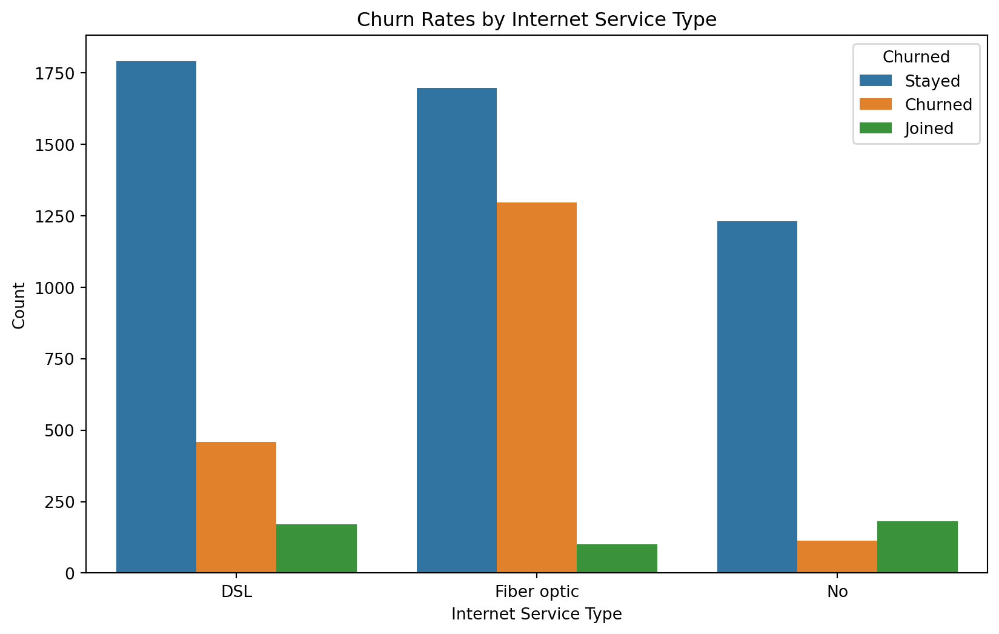
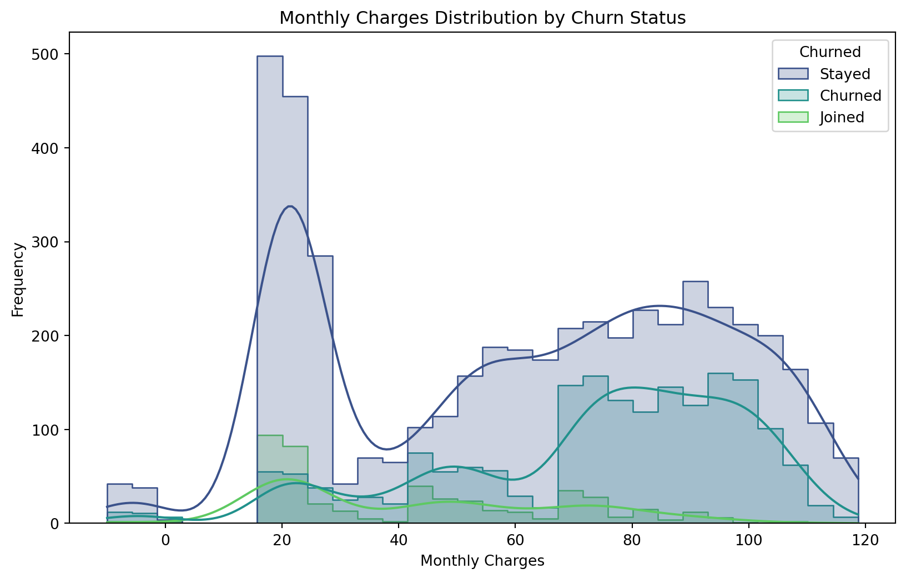
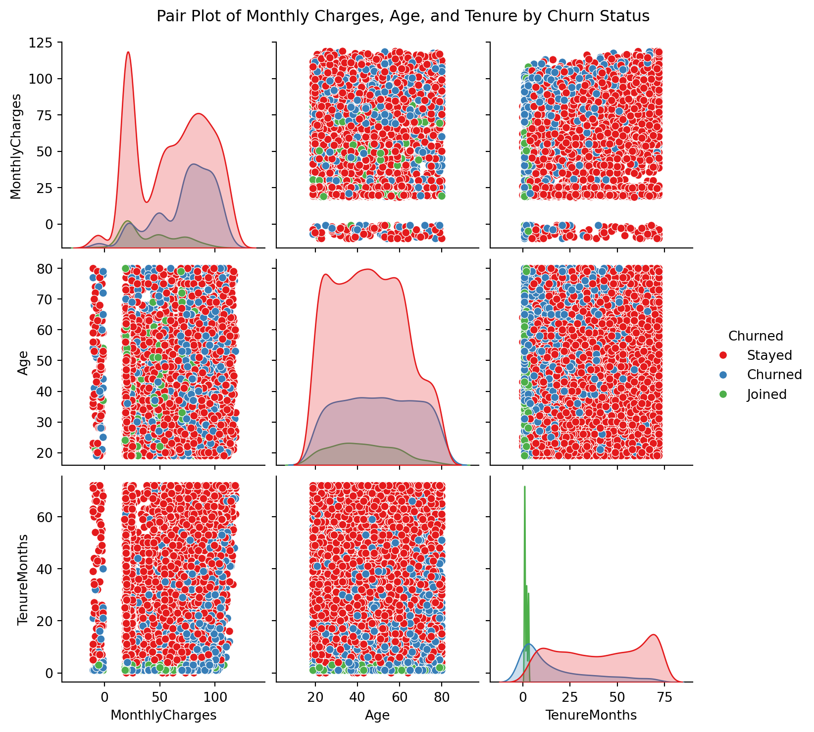
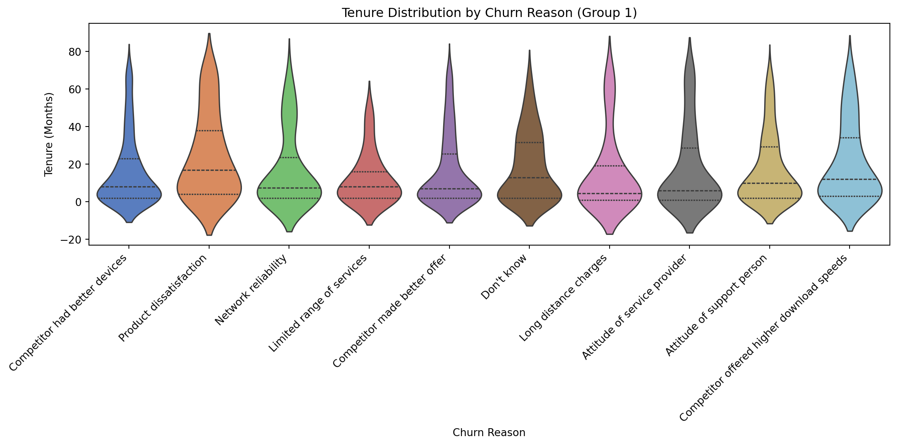
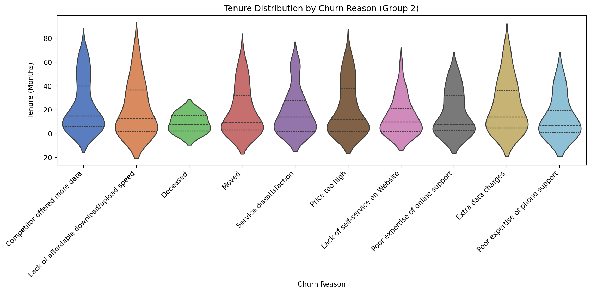

import pandas as pd
import matplotlib.pyplot as plt
import seaborn as sns
from scipy.stats import ttest_ind
import statsmodels.api as sm
import statsmodels.formula.api as smfThis proposal utilizes real telecom customer analytics to determine the main drivers for customer churn. Multiple python programs are chained together to generate visualizations along with regression, logical, and statistical significance tests that clarify the telecom market, monthly trends, and correlation between factors that affect the bottom line. This data was used to formulate a final proposal, broken down into monthly phases, that promises to not only reduce customer churn, but also increase customer retention. This project is tailored to C-suite level executives and lays out a path to market domination.
Executive Summary
Customer churn, or the rate in which customers halt service, is a large issue for subscription-based companies. Minimizing the rate of churn retains revenue and puts less priority on expensive customer acquisition strategies. This analysis will focus on the telecom industry, a sector that has evolved from a luxury to a necessity in our modern, connected way of living.
Churn rates in the telecom sector sat at an average 21% across the industry in 2020, increasing to 31% in the following year, https://customergauge.com/blog/average-churn-rate-by-industry (Customer Gauge, 2024).
This trend of escalating customer churn poses a risk to the revenue of telecom organizations. Recent changes in the market like fiber optic construction, more robust customer service options, and optimization of infrastructure have placed more buying power in the hands of the consumer who is looking for reliable internet at a reasonable price.
This report uses two datasets encompassing churn within the telecom industry during the second and third quarters of 2022. These datasets track various metrics like tenure, monthly cost, reason for churn, churn status, and many more to provide an accurate simulation to determine the most valuable trends between churned and active customers and formulate actionable solutions to minimize churn. When combined and cleaned, this dataset contains 7,042 rows of real-world customer data.
Finally, this project yields an actionable plan to reducing customer churn. A 3-month plan was formulated, aimed to capture new and potential customers and retain loyal subscribers, implementing overhauls to onboarding processes, discounts, customer service, and data collection.
Purpose
This report is ultimately tailored for C-suite level executives within a given telecom company, however this report is also relevant to analysts or marketing firms tasked with minimizing customer churn.
There are a few insights to keep in mind while reading this report. Due to limitations within the available data, real world effects resulting from provided solutions will not be measurable until implementation. Customer churn is inevitable, however the goal is to see a noticeable decrease after implementing the solutions. Due to the limited scope in regards to time, this report is only showing trends in the second and third quarters, annual time trends will not be fully visible. Being aware of these trends allows the audience to implement the recommendations, measure the results, compare them to industry average (31%), and apply/compare them to a more macro centered dataset with a wider time scope.
The data and analyses found within this report will first identify and weigh the leading variables surrounding customer churn. These variables were used to formulate tangible actions that, when implemented, work to minimize customer churn, in turn stabilizing monthly cash flow and maximizing revenue.
Situation
Below is a combination of two datasets encompassing multiple telecom companies across the U.S, this dataset contains 7,042 rows, each row representing an active household. This dataset contains 13 columns, 12 serving as a factor influencing customer churn, and one serving as a binary, describing whether the customer churned or is still active. The datasets were cleaned to omit irrelevant columns or rows, and combine similar columns. The new dataset dropped roughly 48% of the original data found within the two datasets. Reputing, or the filling of missing data with ‘dummy data’, was avoided to retain accuracy.
telecom_customer_churn_df = pd.read_csv("C:/Users/liamw/OneDrive/Documents/BLOG/posts/welcome/data/telecom_customer_churn.csv")
telecom_churn_insights_df = pd.read_csv("C:/Users/liamw/OneDrive/Documents/BLOG/posts/welcome/data/TelecomChurnInsights.csv")
telecom_customer_churn_df.rename(columns={
'Customer ID': 'CustomerID',
'Monthly Charge': 'MonthlyCharges',
'Total Charges': 'TotalCharges',
'Customer Status': 'Churned'
}, inplace=True)
telecom_churn_insights_df.rename(columns={
'SeniorCitizen (0: No, 1: Yes)': 'SeniorCitizen',
'Has_Partner': 'Married',
'Has_Dependents': 'Dependents',
'InternetServiceType': 'InternetService',
'MonthlyCharges': 'MonthlyCharges',
'TotalCharges': 'TotalCharges',
'Churned': 'Churned'
}, inplace=True)
merged_df = pd.merge(
telecom_customer_churn_df, telecom_churn_insights_df,
on="CustomerID", suffixes=('_telecom', '_insights'), how="outer"
)
merged_df = merged_df[
['CustomerID', 'Gender_telecom', 'Age', 'SeniorCitizen', 'Married_telecom', 'Dependents',
'TenureMonths', 'InternetService', 'MonthlyCharges_telecom', 'TotalCharges_telecom',
'Churned_telecom', 'Churn Category', 'Churn Reason']
].rename(columns={
'Gender_telecom': 'Gender',
'Married_telecom': 'Married',
'MonthlyCharges_telecom': 'MonthlyCharges',
'TotalCharges_telecom': 'TotalCharges',
'Churned_telecom': 'Churned'
})
#merged_df = merged_df.dropna()
#this method was removed as it removed too many otherwise useful rows
print(merged_df)
print(merged_df.columns)
print(merged_df.shape)
print(merged_df.describe()) CustomerID Gender Age SeniorCitizen Married Dependents TenureMonths \
0 0002-ORFBO Female 37 0 Yes Yes 9
1 0003-MKNFE Male 46 0 No No 9
2 0004-TLHLJ Male 50 0 No No 4
3 0011-IGKFF Male 78 1 Yes No 13
4 0013-EXCHZ Female 75 1 Yes No 3
... ... ... ... ... ... ... ...
7038 9987-LUTYD Female 20 0 No No 13
7039 9992-RRAMN Male 40 0 Yes No 22
7040 9992-UJOEL Male 22 0 No No 2
7041 9993-LHIEB Male 21 0 Yes Yes 67
7042 9995-HOTOH Male 36 0 Yes Yes 63
InternetService MonthlyCharges TotalCharges Churned Churn Category \
0 DSL 65.60 593.30 Stayed NaN
1 DSL -4.00 542.40 Stayed NaN
2 Fiber optic 73.90 280.85 Churned Competitor
3 Fiber optic 98.00 1237.85 Churned Dissatisfaction
4 Fiber optic 83.90 267.40 Churned Dissatisfaction
... ... ... ... ... ...
7038 DSL 55.15 742.90 Stayed NaN
7039 Fiber optic 85.10 1873.70 Churned Dissatisfaction
7040 DSL 50.30 92.75 Joined NaN
7041 DSL 67.85 4627.65 Stayed NaN
7042 DSL 59.00 3707.60 Stayed NaN
Churn Reason
0 NaN
1 NaN
2 Competitor had better devices
3 Product dissatisfaction
4 Network reliability
... ...
7038 NaN
7039 Product dissatisfaction
7040 NaN
7041 NaN
7042 NaN
[7043 rows x 13 columns]
Index(['CustomerID', 'Gender', 'Age', 'SeniorCitizen', 'Married', 'Dependents',
'TenureMonths', 'InternetService', 'MonthlyCharges', 'TotalCharges',
'Churned', 'Churn Category', 'Churn Reason'],
dtype='object')
(7043, 13)
Age SeniorCitizen TenureMonths MonthlyCharges TotalCharges
count 7043.000000 7043.000000 7043.000000 7043.000000 7043.000000
mean 46.509726 0.162147 32.371149 63.596131 2280.381264
std 16.750352 0.368612 24.559481 31.204743 2266.220462
min 19.000000 0.000000 0.000000 -10.000000 18.800000
25% 32.000000 0.000000 9.000000 30.400000 400.150000
50% 46.000000 0.000000 29.000000 70.050000 1394.550000
75% 60.000000 0.000000 55.000000 89.750000 3786.600000
max 80.000000 1.000000 72.000000 118.750000 8684.800000Descriptive Statistics
Statistics were pulled from the datasets and revealed some interesting things to keep in mind. The average age for the customers within the dataset was 46.5 with a monthly rate of $63.60 and a tenure of 32 months. This paints a fairly vivid picture of the most common customer found within this data.
Now that the data is ready to be visualized, I can formulate a few hypotheses about which variables are going to correlate with churn. - Churn will vary by internet type, this is limited to traditional (DSL), fiber optic, and none. I surmise that fiber will carry a higher churn rate, given its acceleration in infrastructure opening the market for competitors. - Customers with higher monthly charges are more likely to churn, I believe the churn count will cluster about one standard deviation above the mean (mean: 63 + st. dev: 31). - Newer customers will be more likely to churn.
Churn Rates by Internet Service Type
DSL(traditional coaxial internet) has a much lower churn rate than Fiber Optic, perhaps this is due to the widespread emergence of Fiber Optics capabilities across competitiors. Customers without internet seem to be the most loyal, perhaps due to lower monthly charges. Priority should lean toward retaining fiber customers, and increasing infrastructure to allow that priority.
# Figure 1. Churn Rates by Internet Service Type
plt.figure(figsize=(10, 6))
sns.countplot(data=merged_df, x="InternetService", hue="Churned")
plt.title("Churn Rates by Internet Service Type")
plt.xlabel("Internet Service Type")
plt.ylabel("Count")
plt.show()
Monthly Charges Distribution by Churn Status
Higher monthly charges strongly correlate with churn, indicating that cost-sensitive customers are more likely to leave if service value doesn’t match their expectations. Churned customers cluster around mid-to-high price points, suggesting dissatisfaction among those paying premium rates without perceived added value. This supports my previous hypothesis and points us in the right direction.
# Figure 2. Monthly Charges Distribution by Churn Status
plt.figure(figsize=(10, 6))
sns.histplot(data=merged_df, x="MonthlyCharges", hue="Churned", kde=True, element="step", bins=30, palette="viridis")
plt.title("Monthly Charges Distribution by Churn Status")
plt.xlabel("Monthly Charges")
plt.ylabel("Frequency")
plt.show()
Pair Plot of Monthly Charges, Age, and Tenure by Churn Status
Younger and newer customers with high monthly charges show a higher likelihood of churn, suggesting price sensitivity among younger customers and potential dissatisfaction among newer subscribers facing premium costs. This supports my previous hypothesis and points us in the right direction.
# Figure 3. Pair Plot of Monthly Charges, Age, and Tenure by Churn Status
sns.pairplot(merged_df, vars=["MonthlyCharges", "Age", "TenureMonths"], hue="Churned", palette="Set1", diag_kind="kde")
plt.suptitle("Pair Plot of Monthly Charges, Age, and Tenure by Churn Status", y=1.02)
plt.show()
Tenure Distribution by Churn Reason (split for clarity)
Competitor-driven churn occurs quickly, while issues like network reliability drive longer-tenured customers to leave, emphasizing the need for competitive pricing early on and consistent quality for long-term retention.
# Figure 4. Tenure Distribution by Churn Reason (Split for clarity)
merged_df['Churned_binary'] = merged_df['Churned'].apply(lambda x: 1 if x == 'Churned' else 0)
churned_data = merged_df[merged_df['Churned_binary'] == 1]
first_half_reasons = churned_data['Churn Reason'].unique()[:len(churned_data['Churn Reason'].unique())//2]
second_half_reasons = churned_data['Churn Reason'].unique()[len(churned_data['Churn Reason'].unique())//2:]
first_half_data = churned_data[churned_data['Churn Reason'].isin(first_half_reasons)]
plt.figure(figsize=(12, 6))
sns.violinplot(data=first_half_data, x="Churn Reason", y="TenureMonths", palette="muted", inner="quartile")
plt.title("Tenure Distribution by Churn Reason (Group 1)")
plt.xlabel("Churn Reason")
plt.ylabel("Tenure (Months)")
plt.xticks(rotation=45, ha='right')
plt.tight_layout()
plt.show()
second_half_data = churned_data[churned_data['Churn Reason'].isin(second_half_reasons)]
plt.figure(figsize=(12, 6))
sns.violinplot(data=second_half_data, x="Churn Reason", y="TenureMonths", palette="muted", inner="quartile")
plt.title("Tenure Distribution by Churn Reason (Group 2)")
plt.xlabel("Churn Reason")
plt.ylabel("Tenure (Months)")
plt.xticks(rotation=45, ha='right')
plt.tight_layout()
plt.show()

Complication
One major problem that was seen from the previous visualizations was a proportionally higher rate of churn in customers with fiber optic internet. This is caused by the more widespread emergence of infrastructure in the fiber optic landscape, allowing competitors the opportunity to price them out. Another reason for the trend is fiber’s allure of fast and reliable internet speeds. An opportunity was revealed when looking at the churn rate across monthly price points. Churned customers clustered around the mid-to-high price point, this is directly caused by being priced out by competition. By focusing on competitive pricing, speeds, and reliability, customers will be less likely to churn and provide more stable monthly cash flow. However these are fairly boilerplate strategies for a business looking to maximize revenue, more tests can be ran to determine more nuanced methods of churn minimization.
T-test, Monthly Charges and Tenure in Regards to Churned and Stayed Customers
Monthly charges:
- A positive t-statistic indicates that, on average, churned customers experienced higher monthly charges than customer who stayed.
- With a p-value less than 0.05, we can safely reject the null hypothesis, this is a hypothesis that surmises that there is no significant relationship between variables. In this instance, the p-value of 6.1e-57 is far below the significance threshold of 0.05. This indicates that there is a statistically significant difference in the average monthly charges between churned and retained customers, supporting the previous hypotheses made about monthly payments.
Tenure:
- A large negative t-statistic indicates that churned customers have significantly shorter tenures than retained customers. This implies that churned customers leave much earlier in their subscription lifecycle compared to retained customers.
- With an even smaller p-value than the previous test, we can confidently reject the null hypothesis. Shorter tenures are strongly associated with churn.
churned_monthly_charges = merged_df[merged_df['Churned_binary'] == 1]['MonthlyCharges']
retained_monthly_charges = merged_df[merged_df['Churned_binary'] == 0]['MonthlyCharges']
t_stat, p_value_monthly_charges = ttest_ind(churned_monthly_charges, retained_monthly_charges, nan_policy='omit')
churned_tenure = merged_df[merged_df['Churned_binary'] == 1]['TenureMonths']
retained_tenure = merged_df[merged_df['Churned_binary'] == 0]['TenureMonths']
t_stat_tenure, p_value_tenure = ttest_ind(churned_tenure, retained_tenure, nan_policy='omit')
print("T-test for Monthly Charges:")
print("T-statistic:", t_stat, "P-value:", p_value_monthly_charges)
print("\nT-test for Tenure:")
print("T-statistic:", t_stat_tenure, "P-value:", p_value_tenure)T-test for Monthly Charges:
T-statistic: 16.046789508822908 P-value: 6.103197055566191e-57
T-test for Tenure:
T-statistic: -31.579550511353766 P-value: 7.99905796059022e-205Logistic Regression
Key Findings
- Monthly Charges:
Higher monthly charges increase churn likelihood (coef = 0.0296, p < 0.000). Customers paying more are more likely to leave, indicating pricing dissatisfaction. - Tenure:
Longer tenures decrease churn likelihood (coef = -0.0538, p < 0.000). Retention efforts should target customers in their early months. - Age:
Older customers show a slight increase in churn likelihood (coef = 0.0130, p < 0.000), suggesting a need for tailored engagement strategies.
Model Performance
Pseudo R-squared: 0.2154 (moderate fit). This indicates that the model explains about 21.5% of the variance in churn. While this suggests a moderate fit, additional predictors or interaction terms could improve explanatory power.
Implications
Address pricing concerns, improve onboarding, and tailor services for older customers to reduce churn.
X = merged_df[['MonthlyCharges', 'TenureMonths', 'Age']]
X = sm.add_constant(X)
y = merged_df['Churned_binary']
logit_model = sm.Logit(y, X)
result = logit_model.fit()
print(result.summary())Optimization terminated successfully.
Current function value: 0.453978
Iterations 7
Logit Regression Results
==============================================================================
Dep. Variable: Churned_binary No. Observations: 7043
Model: Logit Df Residuals: 7039
Method: MLE Df Model: 3
Date: Mon, 10 Feb 2025 Pseudo R-squ.: 0.2154
Time: 18:36:34 Log-Likelihood: -3197.4
converged: True LL-Null: -4075.1
Covariance Type: nonrobust LLR p-value: 0.000
==================================================================================
coef std err z P>|z| [0.025 0.975]
----------------------------------------------------------------------------------
const -2.1800 0.114 -19.168 0.000 -2.403 -1.957
MonthlyCharges 0.0296 0.001 23.638 0.000 0.027 0.032
TenureMonths -0.0538 0.002 -32.104 0.000 -0.057 -0.051
Age 0.0130 0.002 7.075 0.000 0.009 0.017
==================================================================================Resolution
Proposed Approach
To mitigate churn, the strategy addresses high monthly charges, improves early retention, and tailors services for specific demographics. This aligns with the identified challenges of high churn among short-tenure, high-paying customers, and dissatisfaction among older subscribers.
Key Elements of Strategy
- Pricing Optimization:
- Introduce tiered pricing and loyalty rewards.
- Offer discounts or additional value for high-paying customers.
- Enhanced Onboarding:
- Create seamless onboarding programs.
- Incentivize early tenure retention with personalized offers.
- Targeted Engagement:
- Develop tailored services for older customers.
- Address customer satisfaction pain points proactively.
- Data-Driven Monitoring:
- Analyze churn data to identify patterns.
- Use predictive models to target at-risk customers.
Expected Benefits
- Reduced Churn Rates: Pricing adjustments and onboarding improvements will increase customer satisfaction.
- Increased CLV: Longer retention reduces acquisition costs and increases revenue.
- Enhanced Satisfaction: Tailored strategies for at-risk groups foster loyalty.
- Proactive Insights: Data analysis supports continuous improvement.
Supporting Evidence
- Monthly Charges: Higher charges increase churn likelihood (coef = 0.0296, p < 0.000). Figure 2 also supports this claim.
- Tenure: Shorter tenures strongly correlate with churn (t = -31.58, p < 0.000). This correlation is strengthened by figure 3.
- Age: Older customers show increased churn (coef = 0.0130, p < 0.000).
- Churn Reasons: Violin plots highlight tenure-based churn patterns, guiding targeted interventions.
This data-driven strategy offers actionable steps to address churn, enhance retention, and create long-term value.
Call to Action
Proposed Actions or Decisions
- Pricing Optimization:
- Introduce tiered pricing models to cater to diverse customer needs.
- Implement loyalty discounts for long-tenure customers.
- Regularly monitor and adjust pricing to remain competitive.
- Enhanced Onboarding and Early Retention:
- Design and roll out an onboarding program that includes personalized welcome messages and tutorials.
- Offer discounts or free trials for the first 6 months to reduce early churn risks.
- Targeted Engagement Strategies:
- Develop a dedicated support program for older customers, including simplified plans and personalized assistance.
- Conduct periodic customer satisfaction surveys to identify and address pain points proactively.
- Data-Driven Monitoring:
- Implement a churn prediction model to identify at-risk customers.
- Use churn visualizations (e.g., tenure distribution by churn reason) to inform intervention strategies.
Assignment of Responsibility
- Pricing Optimization:
- Marketing and Finance Teams: Collaborate to define tiered pricing and discount structures.
- Executive Leadership: Approve pricing adjustments and allocate budgets.
- Enhanced Onboarding:
- Customer Success Team: Develop onboarding materials and strategies.
- IT Department: Automate welcome processes and integrate retention tools.
- Targeted Engagement:
- Customer Support Team: Provide tailored support for older customers and conduct satisfaction surveys.
- Data Analytics Team: Analyze survey results and identify trends.
- Data-Driven Monitoring:
- Data Science Team: Build and maintain churn prediction models.
- Product Managers: Use insights from churn analysis to prioritize feature development.
Implementation Timeline
- Month 1:
- Finalize pricing optimization strategies.
- Begin onboarding program development.
- Establish data science resources for churn prediction modeling.
- Month 2:
- Roll out tiered pricing and loyalty discounts.
- Launch the onboarding program with welcome emails and tutorials.
- Begin customer satisfaction surveys and data analysis.
- Month 3:
- Launch targeted engagement strategies for older customers.
- Deploy churn prediction models and monitor at-risk customers.
- Review progress and refine strategies based on initial results.
By taking these actions, the organization will address the root causes of churn, improve customer retention, and maximize long-term revenue potential.